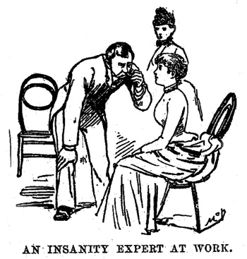

Story :
In 1887, two years after she launched her career with a response to a patronizing chauvinist and two years before she raced around the world in a quest to outpace Jules Verne’s fictional eighty-day itinerary, pioneering Victorian journalist Nellie Bly (May 5, 1864–January 27, 1922) pulled off one of the most courageous feats in the history of investigative reporting — posing as insane, she embedded herself at the Women’s Lunatic Asylum on Blackwell’s Island to bring public attention to the horrific brutality and neglect to which patients were subjected. Her resulting exposé, titled Ten Days in a Mad-House and originally published as a series of articles in New York World, is now included in the altogether fantastic collection Around the World in Seventy-Two Days and Other Writings (public library). The story not only established Bly, a twenty-something woman amidst a male-dominated Victorian media landscape, as a formidable and fearless journalist, but also led to a grand jury investigation, which she assisted in and which resulted in a $1,000,0000 increase in New York City’s budget for the care of the mentally ill.
Bly’s strategy was simple, yet anything but easy: She’d “assume the characteristics of insanity to such a degree [as to fool] the doctors,” and then proceed to write “a plain and unvarnished narrative of the treatment of the patients therein and the methods of management” — a mission she knew would be at once delicate and difficult. What she witnessed there — cold baths, forced starvation, beatings, the hovering threat of sexual assault, and a general atmosphere more akin to a concentration camp than to a healthcare establishment — is a timelessly tragic parable for what happens when largely arbitrary circumstances render one group of people helpless and another in power, a heartbreaking real-life enactment of the Stanford Prison Study revealing just how much cruelty humans are capable of when they assume positions of authority, however minuscule, over those less fortunate. Above all, it’s a sobering reminder that the true measure of power is not how deftly we can assert our authority but how much kindness and compassion we can show others in their greatest moments of vulnerability.
And yet despite the harrowing brutality she both witnessed and experienced, Bly was a true believer in the human spirit and noted, amidst the cesspool of cruelty, the kindness of the few individuals who chose to rise above the poisonous atmosphere that turned others into monsters. She frames the premise in the preface:
From the moment I entered the insane ward on the island I made no attempt to keep up the assumed role of insanity. I talked and acted just as I do in ordinary life. Yet strange to say, the more sanely I talked and acted the crazier I was thought to be by all except one physician, whose kindness and gentle ways I shall not soon forget.
She began by assuming the look of the insane — “they must have staring eyes, and so I opened mine as wide as possible and stared unblinkingly”; “I assumed the look which maidens wear in pictures entitled ‘Dreaming.'” — and presented herself at a temporary women’s shelter at 84 Second Avenue in New York. Her plan was to feign a mental breakdown there, with no sign of family or friends, and have the matron commit her to the mental ward at the hospital, where she would convince the doctors that she belonged in a permanent asylum.
Bly had barely begun her foray into the lives of the less privileged when she already experienced the sliding scale of dismissal and disrespect those classes of citizens routinely received. She describes her arrival at the shelter for poor women:
I passed through the little paved yard to the entrance of the Home. I pulled the bell, which sounded loud enough for a church chime, and nervously awaited the opening of the door to the home which I intended should ere long cast me forth and out upon the charity of the police. The door was thrown back with a vengeance and a short, yellow-haired girl of some thirteen summers stood before me.
“Is the matron in?” I asked faintly.
“Yes, she’s in; she’s busy. Go to the back parlor,” answered the girl in a loud voice, without one change in her peculiarly matured face.
I followed these not overkind or polite instructions and found myself in a dark, uncomfortable back parlor. There I awaited the arrival of my hostess. I had been seated some twenty minutes at the least, when a slender woman, clad in a plain dark dress, entered and, stopping before me, ejaculated inquiringly, “Well?”
Despite the general unfriendliness of the matron and her staff, Bly encounters at the shelter a kindly Boston proofreader named Mrs. Caine “who was as courageous as she was good-hearted.” Still, Bly proceeds with her plan and when probed about her circumstances and how she ended up at the shelter, she acts according to her strategy, all the while maintaining her humor about the absurd expectations for women at the time:
“Everything is so sad,” I said in a haphazard way, which I had intended to reflect my craziness.
“But you must not allow that to worry you. We all have our troubles, but we get over them in good time. What kind of work are you trying to get?”
“I do not know; it’s all so sad,” I replied.
“Would you like to be a nurse for children and wear a nice white cap and apron?” she asked.
I put my handkerchief up to my face to hide a smile and replied in a muffled tone, “I never worked; I don’t know how.”
Bly tells her inquisitors that she’s been having a terrible headache, which made her forget everything. To further enact her role of a “poor loon,” as the other women had quickly come to call her, she refused to go to sleep that first night, forcing herself to stay awake. Her exquisite writing and beautiful mind shine through, emanating Susan Sontag’s famous assertion that “a writer is someone who pays attention to the world… a professional observer” as Bly recounts how she occupied herself during that sleepless night with a blend of awake curiosity and unflinching humor:
Robert Bruce in his captivity had won confidence in the future and passed his time as pleasantly as possible under the circumstances by watching the celebrated spider building his web. I had less noble vermin to interest me. Yet I believe I made some valuable discoveries in natural history. I was about dropping off to sleep in spite of myself, when I was suddenly startled to wakefulness. I thought I heard something crawl and fall down upon the counterpane with an almost inaudible thud. I had the opportunity of studying these interesting animals very thoroughly. They had evidently come for breakfast, and were not a little disappointed to find that their principal plat was not there. They scampered up and down the pillow, came together, seemed to hold interesting converse and acted in every way as if they were puzzled by the absence of an appetizing breakfast. After one consultation of some length they finally disappeared, seeking victims elsewhere, and leaving me to pass the long minutes by giving my attention to cockroaches, whose size and agility were something of a surprise to me.
Though able to remain amused at these initial discomforts, Bly soon finds herself in much less comical circumstances. The next morning, the matron calls the police and the “poor loon” is taken to the courthouse by two strong policemen, “making an advance towards the home of the insane.” To her dismay, she is faced with an officer whom she had interviewed just ten days earlier in her regular job as a reporter and instantly fears he would remember and give her away. Alas, she has already become invisible in that insidious way that befalls society’s least privileged members — the officer doesn’t recognize her but sees, instead, just a faceless insane woman before him. Even as she begins to grasp the deep-seated neglect and even contempt with which the “poor unfortunates” are treated by the legal system and society at large, Bly doesn’t fail to note those oases of kindness she encounters along the way, as in the judge presiding over her case:
Judge Duffy sat behind the high desk, wearing a look which seemed to indicate that he was dealing out the milk of human kindness by wholesale. I rather feared I would not get the fate I sought because of the kindness I saw on every line of his face.
Although the system folds his kindness into its merciless machinery and Bly is ordered to be taken away by an ambulance, she finds herself grateful for the dignity the kindly judge affords her even as he hands her off to the ambulance driver:
The Judge told him to take me and to be kind to me, and to tell the people at the hospital to be kind to me and to do all they could for me. If we only had more such men as Judge Duffy the poor unfortunates would not find life all darkness.
But the further down the rabbit hole of mental healthcare Bly tumbled, as she successfully fooled the authorities into pronouncing her insane, the more keenly aware she became of the degree of darkness that enveloped those “poor unfortunates” who entered the system against their will. As soon as she arrived at Bellevue Hospital, her third stop en route to the final destination of the Blackwell’s Island asylum, she was assigned to the “insane pavilion” — the mental ward at the hospital — and dragged there unceremoniously:
A muscular man came forward and caught me so tightly by the arm that a pain ran clear through me. It made me angry, and for a moment I forgot my role as I turned to him and said: “How dare you touch me?” At this he loosened his hold somewhat, and I shook him off with more strength than I thought I possessed. “I will go with no one but this man,” I said, pointing to the ambulance surgeon. “The Judge said that he was to take care of me, and I will go with no one else.” At this the surgeon said that he would take me, and so we went arm in arm, following the man who had at first been so rough with me.
Once inside, she paints a menacing picture more akin to a prison than to a facility dedicated to healing:
The long, uncarpeted hall was scrubbed to that peculiar whiteness seen only in public institutions. In the rear of the hall were large iron doors fastened by a padlock. Several stiff-looking benches and a number of willow chairs were the only articles of furniture. On either side of the hall were doors leading into what I supposed and what proved to be bedrooms. Near the entrance door, on the right-hand side, was a small sitting room for the nurses, and opposite it was a room where dinner was dished out. A nurse in a black dress, white cap and apron and armed with a bunch of keys had charge of the hall.
True to her unrelenting optimism, Bly is able to find goodness even in this grim environment, noting of an old Irishwoman doing maid work at the ward:
I am glad to know that there is such a good-hearted woman in that place. I experienced only kindness and the utmost consideration from her.
There are only three other patients at the ward, including a young chambermaid taken there some time ago after experiencing a breakdown from overwork, but appearing perfectly sane to Bly’s eye. Indeed, this is Bly’s first inkling that the line between the sane and the insane in those institutions, far from sharp, is drawn in a rather arbitrary and artificial manner by doctors who treat their patients as invisible and refuse to listen to their rational protestations.
Soon, Bly also has her first brush with the physical discomforts and outright pain inflicted by the negligent and often deliberately malicious personnel. Her first such sobering experience comes by nightfall:
All the windows in the hall were open and the cold air began to tell on my Southern blood. It grew so cold indeed as to be almost unbearable, and I complained of it to [the nurses]. But they answered curtly that as I was in a charity place I could not expect much else. All the other women were suffering from the cold and the nurses themselves had to wear heavy garments to keep themselves warm. I asked if I could go to bed. They said “No!” At last Miss Scott got an old gray shawl and shaking some of the moths out of it told me to put it on. “It’s rather a bad looking shawl,” I said. “Well, some people would get along better if they were not so proud,” said Miss Scott. “People on charity should not expect anything and should not complain.” So I put the moth-eaten shawl with all its musty smell around me, and sat down on a wicker chair, wondering what would come next, whether I should freeze to death or survive.

Just as Bly wraps herself reluctantly in the shabby shawl, it is jerked from her by the nurse, who has brought with her a doctor. After examining Bly — and insinuating that she must be a prostitute — he pronounces her “positively demented.” She spends another sleepless night, her first at Bellevue, this time kept up against her will by the nurses who read aloud to each other all night with no regard for patients. The next morning, she is to be taken, at last, to the Blackwell’s Island Lunatic Asylum. But even this light sample taste of the fate of the mentally ill gives Bly unshakable unease about what’s to come, despite her arrangement:
In spite of the knowledge of my sanity and the assurance that I would be released in a few days, my heart gave a sharp twinge. Pronounced insane by four expert doctors and shut up behind the unmerciful bolts and bars of a madhouse! Not to be confined alone, but to be a companion, day and night, of senseless, chattering lunatics; to sleep with them, to eat with them, to be considered one of them, was an uncomfortable position.
Still, she plows ahead with the plan. Once at Blackwell’s Island, her entire reality is transmogrified into a living nightmare — a nightmare from which the system’s real patients can’t be awakened by the end of an undercover assignment. What follows is made all the more poignant by the fact that from the moment Bly arrives on the island, she stops making any attempt to feign insanity and behaves as her usual sane self, only to find that the doctors make no distinction — a detail that pulls into question whether a good portion of the other “insane” women belong there in the first place.
A hint of the brutalities in store arrives almost immediately, as Bly is dragged to her first meal at the institution. After being made to wait for 45 minutes standing in the hallway, the women are taken to the dining hall, where they are seated on backless benches facing a long table, “uncovered and uninviting,” running from one end of the room to the other. They are served thick slices of bread with rancid butter and five prunes each, along with bowls “filled with a pinkish-looking stuff which the patients called tea.” (“It had no sugar and it tasted as if it had been made in copper.”) Bly is flung her food by a hostile nurse, but it is so repugnantly inedible that, despite her two days of starvation, she is unable to swallow it.
Another offering, spoiled beef, is served without utensils, forcing the women to gnaw the tough chunks like savages — one of the myriad practices at the asylum that inflicts upon even the sane women, of whom Bly is to meet a number, the behaviors of the insane, systematically chipping away at their psychoemotional resilience and turning even the false diagnoses of insanity into self-fulfilling prophesies.
But what comes next makes the supper look like a picnic. Bly describes terror of the cold baths, to which the patients were routinely subjected:
We were taken into a cold, wet bathroom and I was ordered to undress. Did I protest? Well, I never grew so earnest in my life as when I tried to beg off. They said if I did not they would use force and that it would not be very gentle. At this I noticed one of the craziest women in the ward standing by the filled bathtub with a large discolored rag in her hands. She was chattering away to herself and chuckling in a manner which seemed to me fiendish. I knew now what was to be done with me. I shivered. They began to undress me and one by one they pulled off my clothes. At last everything was gone excepting one garment. “I will not remove it,” I said vehemently, but they took it off. I gave one glance at the group of patients gathered at the door watching the scene, and I jumped into the bathtub with more energy than grace.
The water was ice-cold, and I again began to protest. How useless it all was. I begged, at least, that the patients be made to go away, but was ordered to shut up. The crazy woman began to scrub me. I can find no other word that will express it but scrubbing. From a small tin pan she took some soft soap and rubbed it all over me, even all over my face and my pretty hair. I was at last past seeing or speaking, although I had begged that my hair be left untouched. Rub, rub, rub, went the old woman, chattering to herself. My teeth chattered and my limbs were goosefleshed and blue with cold. Suddenly I got, one after the other, three buckets of water over my head—ice-cold water, too — into my eyes, my ears, my nose and my mouth. I think I experienced some of the sensations of a drowning person as they dragged me, gasping, shivering and quaking, from the tub. For once I did look insane, as they put me, dripping wet, into a short canton flannel slip, labelled across the extreme end in large black letters, “Lunatic Asylum, B. I. H. 6.” The letters meant Blackwell’s Island, Hall 6.

After the shock of the experience, Bly finds herself unable to sleep and keeps herself occupied by pondering the devastating consequences of the opposite element: the asylum is a monumental fire hazard that dooms the patients to certain and gruesome death should the place be set ablaze. (The proposition is far from hypothetical: More than half a century later, little had changed — Zelda Fitzgerald perished in a hospital fire in 1948.) Bly considers the hypothetical but chillingly likely scenario:
Every door is locked separately and the windows are heavily barred so that escape is impossible. In the one building alone there are [around] 300 women. They are locked, one to ten to a room. It is impossible to get out unless these doors are unlocked. A fire is not improbable, but one of the most likely occurrences. Should the building burn the jailors or nurses would never think of releasing their crazy patients. This I can prove to you later when I come to tell of their cruel treatment of the poor things intrusted to their care. As I say, in case of fire, not a dozen women could escape. All would be left to roast to death. Even if the nurses were kind, which they are not, it would require more presence of mind than women of their class possess to risk the flames and their own lives while they unlocked the hundred doors for the insane prisoners. Unless there is a change there will some day be a tale of horror never equaled.
Besides the physical and psychoemotional trauma of the cold baths and the imminent threat of a fiery death, Bly observes — and experiences — the institution’s gobsmacking failures of hygiene, which the nurses go to great lengths to hide from visitors and public officials. The women are all dried with the same towel — those with healthy skin as well as those with extreme eruptions of rashes and infections — and combed with a “public comb.” The baths themselves are the most egregious atrocity of hygiene:
On bathing day the tub is filled with water and the patients are washed, one after the other, without a change of water. This is done until the water is really thick, and then it is allowed to run out and the tub is refilled without being washed. The same towels are used on all the women, those with eruptions as well as those without. The healthy patients fight for a change of water, but they are compelled to submit to the dictates of the lazy, tyrannical nurses. The dresses are seldom changed oftener than once a month. If the patient has a visitor I have seen the nurses hurry her out and change her dress before the visitor comes in. This keeps up the appearance of careful and good management.
As if these assaults on basic human dignity weren’t enough to render the asylum abominable, Bly has by that point only experienced a fraction of the horrors. It isn’t until she witnesses the actual “care” for the insane that she grasps the full scope of the institutionalized brutalities. In the yard, she is faced with a sight she’d never forget, the “rope gang” — a long rope onto which fifty-two women are strung together via wide leather belts locked around their waists; all are sobbing, crying, or screaming, each inhabiting her private delusion in public. The remaining patients — those less visibly delusional or violent, Bly included — are forced to sit on benches from morning till night, scolded and beaten for moving or speaking, and generally treated as mindless automata unworthy of dignity or compassion. An air of helplessness and hopelessness envelops the women, aware that telling the doctors of the brutalities would only elicit more beatings from the inhumane nurses.
Here, Bly makes her most important point:
What, excepting torture, would produce insanity quicker than this treatment? Here is a class of women sent to be cured? I would like the expert physicians who are condemning me for my action, which has proven their ability, to take a perfectly sane and healthy woman, shut her up and make her sit from 6 A.M. until 8 P.M. on straight-back benches, do not allow her to talk or move during these hours, give her no reading and let her know nothing of the world or its doings, give her bad food and harsh treatment, and see how long it will take to make her insane.
Wistfully, she notes how far removed that demonic world is from the reality we find conceivable in normal life:
People in the world can never imagine the length of days to those in asylums. They seemed never ending, and we welcomed any event that might give us something to think about as well as talk of.
Bly illustrates the lengths to which the nurses went to amuse themselves with a sliding scale of heartbreaking cases:
Soon after my advent a girl called Urena Little-Page was brought in. She was, as she had been born, silly, and her tender spot was, as with many sensible women, her age. She claimed eighteen, and would grow very angry if told to the contrary. The nurses were not long in finding this out, and then they teased her. “Urena,” said Miss Grady, “the doctors say that you are thirty-three instead of eighteen,” and the other nurses laughed. They kept this up until the simple creature began to yell and cry, saying she wanted to go home and that everybody treated her badly. After they had gotten all the amusement out of her they wanted and she was crying, they began to scold and tell her to keep quiet. She grew more hysterical every moment until they pounced upon her and slapped her face and knocked her head in a lively fashion. This made the poor creature cry the more, and so they choked her. Yes, actually choked her. Then they dragged her out to the closet, and I heard her terrified cries hush into smothered ones. After several hours’ absence she returned to the sitting-room, and I plainly saw the marks of their fingers on her throat for the entire day.
Some of the women Bly encounters at the asylum are foreigners, completely sane, confined there for no other reason than speaking too little English to explain their situation to the doctors, policemen, judges, and other examiners along the hellish road from normal life to Blackwell’s Island. One woman, a young foreigner, is sent there by her husband for having triggered his jealousy with other men.
The most gruesome abuses, however, take place in a corner of the asylum deceptively called the Retreat. One woman Bly meets, Mrs. Cotter, was sent there for speaking to a man on the premises. She relays the devastating experience to Bly:
For crying the nurses beat me with a broom-handle and jumped on me, injuring me internally so that I will never get over it. Then they tied my hands and feet and, throwing a sheet over my head, twisted it tightly around my throat, so I could not scream, and thus put me in a bathtub filled with cold water. They held me under until I gave up every hope and became senseless. At other times they took hold of my ears and beat my head on the floor and against the wall. Then they pulled my hair out by the roots so that it will never grow in again.
Another woman shares her own story from the Retreat, where she was put on the “rope gang”:
The beatings I got there were something dreadful. I was pulled around by the hair, held under the water until I strangled, and I was choked and kicked. The nurses would always keep a quiet patient stationed at the window to tell them when any of the doctors were approaching. It was hopeless to complain to the doctors for they always said it was the imagination of our diseased-brains, and besides we would get another beating for telling. They would hold patients under the water and threaten to leave them to die there if they did not promise not to tell the doctors. We would all promise because we knew the doctors would not help us, and we would do anything to escape the punishment… Among other beatings I got there, the nurses jumped on me once and broke two of my ribs.
The physical abuse is coupled with chemical manipulation — Bly notes that the nurses injected enough morphine and chloral into patients to make even the sane crazy. And therein lies the heartbreaking core of her exposé: However grotesque a caricature, Blackwell’s Island, which no doubt had its parallels in other such institutions, was emblematic of society’s treatment of its most vulnerable members, seeing every sign of weakness as an invitation to exploitation, every failing of privilege as an opening for the exertion of cruel power, every symptom of fragile humanity as a license for perpetrating inhumanity.
As Bly’s ten-day stay in the inferno of insanity comes to an end, she leaves with unsettling awareness of the fate of those “poor unfortunates” confined to the asylum for good:
The Insane Asylum on Blackwell’s Island is a human rat-trap. It is easy to get in, but once there it is impossible to get out.
[…] I had looked forward so eagerly to leaving the horrible place, yet when my release came and I knew that God’s sunlight was to be free for me again, there was a certain pain in leaving. For ten days I had been one of them. Foolishly enough, it seemed intensely selfish to leave them to their sufferings. I felt a Quixotic desire to help them by sympathy and presence. But only for a moment. The bars were down and freedom was sweeter to me than ever.
Ten Days in a Mad-House is well worth reading in its entirety, despite the excruciating discomfort — not only for Bly’s beautiful prose and sharp-witted observations, but also for the timeless reminder of how little it takes for power structures to mutate into abuse of marginalized groups and how crucial it is for us, as a society and as individuals, to find — to empower — to be — the Nellie Blys who call attention to injustice, effect change for those less privileged, and perhaps, above all, find the soft beams of kindness, those expansive rays of the human spirit, even amid the harshest of realities.